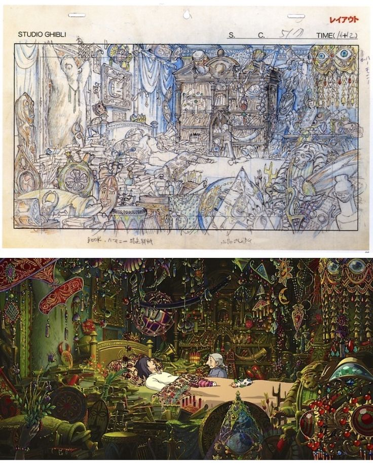

 Ghibli started in 1985 by talented creators Hayao Miyazaki and Isao Takahata. They're famous for making beautiful hand-drawn animated movies with really touching stories. The name "Ghibli" is derived from the Italian word for a warm, Mediterranean breeze, symbolizing the studio's aspiration to bring fresh, creative ideas to the world of animation. You might know some of their classics like "My Neighbor Totoro" and "Spirited Away." These movies are loved all around the world. Ghibli's characters like Totoro and No-Face have become super popular. They draw and animate everything by hand, which is special in today's world of computers.Their impact goes beyond entertainment and cover topics like environmentalism and empowerment of female protagonists. such as Nausicaä, Chihiro, and Princess Mononoke. These characters have become symbols of empowerment, influencing discussions on gender roles in animation. "Spirited Away" an Oscar in 2003. Their movies have won other big prizes too! Even though some of the founders have retired, Studio Ghibli is still making new projects. So, their magical stories will keep enchanting people for many more generations.